Graf Parțial & Subgraf
Graf Parțial
Subgraf
Definiție:
Fie G=(X,U) un graf neorientat.
Se numește graf parțial al lui G un graf G1=(X1,U1), format din aceeași mulțime de noduri (X=X1) și o submulțime a muchiilor lui G.
Cu alte cuvinte, graful parțial are aceleași noduri ca graful inițial, doar numărul de muchii diferă.
Numărul total de grafuri parțiale G este 2m.
Definiție:
Fie G=(X,U) un graf neorientat.
Se numește subgraf al lui G un graf G1=(X1,U1) cu proprietatea că X1 este o submulțime nevidă a lui X, iar U1 conține toate muchiile lui G care au ambele extremități în X1.
Numărul total de subgrafuri al lui G este 2n-1
 În figura anterioară este prezentat un graf parțial, în care au fost scoase muchiile din interiorul formei. Astfel nodul 7 rămâne nod izolat.
În figura anterioară este prezentat un graf parțial, în care au fost scoase muchiile din interiorul formei. Astfel nodul 7 rămâne nod izolat.
